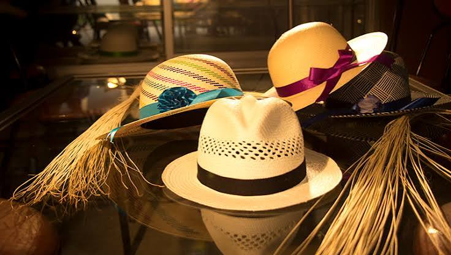

Sabemos que la calidad de un helado comienza en el correcto origen de su materia prima. Por eso, elegimos trabajar con los mejores productores, seleccionando los especialistas en cada ingrediente, siempre de origen natural.
Además, aplicamos exhaustivos análisis sobre cada materia prima asegurando su inocuidad y el estándar de excelencia que buscamos. Solo si el ingrediente aprueba los controles de laboratorio puede ingresar al proceso productivo.

¡Lleva la tradición de Narihualá a tu hogar! Si deseas consultar por nuestros sombreros, canastas o accesorios tejidos en paja toquilla, o si quieres solicitar un diseño personalizado, déjanos tus datos. Nos encantará ponernos en contacto contigo para ayudarte a elegir una pieza única hecha con el corazón por nuestros artesanos.
¿Tienes alguna consulta o deseas un diseño personalizado? Completa el formulario con tus datos de contacto y te enviaremos toda la información sobre nuestras artesanías a la brevedad.